About Jin Chang
啟動精準合作
晉昌貿易有限公司成立於 2012 年，深耕工業閥門與流體控制領域超過 15 年。 我們整合自有註冊品牌與國際授權技術，為客戶提供從閥體選型到執行器配置的 一站式解決方案，是您工業流體控制最堅實的後盾。
2012
成立年份
15+
年產業經驗
02
氣動 × 電動雙驅動系統


About Jin Chang
晉昌貿易有限公司成立於 2012 年，深耕工業閥門與流體控制領域超過 15 年。 我們整合自有註冊品牌與國際授權技術，為客戶提供從閥體選型到執行器配置的 一站式解決方案，是您工業流體控制最堅實的後盾。
Brand Portfolio
自有註冊商標搭配授權經銷品牌，涵蓋氣動與電動雙驅動應用場景。
氣動執行器 · 氣動球閥／蝶閥整合
電動執行器 · 電動球閥／蝶閥整合
Core Competencies
從執行器系統到閥門解決方案，涵蓋製程整合與自動化管線配置。
System Architecture
以驅動核心串聯執行終端，因應各式閥體材質需求，構成完整流體控制方案。
Dual-Drive Comparison
依廠房環境與作動需求，選擇最適合的驅動方案。
| B-TORQUE ｜ 自有品牌 · 氣動驅動 | FLOWINN ｜ 授權經銷 · 電動驅動 | |
|---|---|---|
| 動力來源 | 壓縮空氣 | 電力 |
| 作動特性 | 極速響應、高頻繁作動 | 穩定扭矩、精準定位 |
| 最佳應用場景 | 防爆需求、化工危險區域 | 遠端控制、無氣源廠房 |
| 產品定位與授權 | 晉昌專屬註冊商標 | 官方授權專業經銷 |
Engineering Track Record
從化工消防到市政水資源，晉昌的閥門控制方案落地於多元工業場域。
Featured Case · 2020
挑戰與情境
化工廠區具高度易燃風險，消防泡沫系統需在緊急狀況下達到「零延遲、零故障」的作動標準。
Solution
晉昌解決方案
部署高妥善率之控制閥門，確保管線於極端環境下之氣密性與瞬間爆發力，守護廠區最高工安標準。
Chemical & Fire Safety
勝一化工二廠專案／消防泡沫工程控制系統
2020
Municipal Engineering
台中市福田水資源中心／大型水處理場域控制閥門部署
2020
Equipment Manufacturing
台南曄拓設備／工業設備自動化導入
2017
Sanitary Process
食品與生技產業／電動衛生級蝶閥配置
2021
Get in Touch
歡迎洽詢閥門選型、執行器配置或工業流體控制系統整合方案。
電話 TEL
04-2263-1958代表人
林淑如
地址 ADDRESS
臺中市烏日區三榮六路50巷3號1樓
1F., No. 3, Ln. 50, Sanrong 6th Rd., Wuri Dist.,
Taichung City 414010, Taiwan (R.O.C.)
晉昌貿易有限公司
JIN CHANG HARDWARE TRADING CO., LTD.